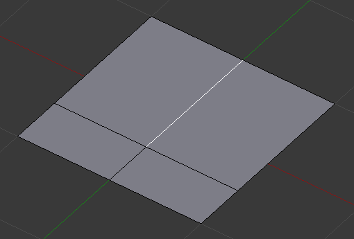
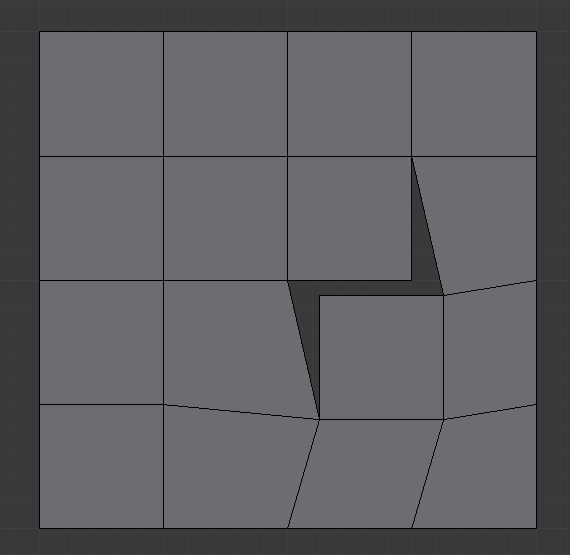
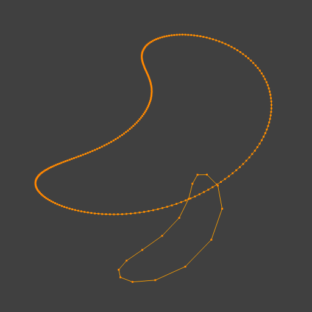
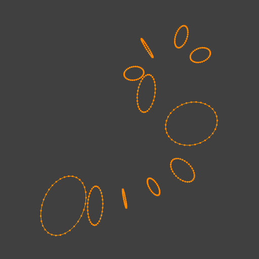
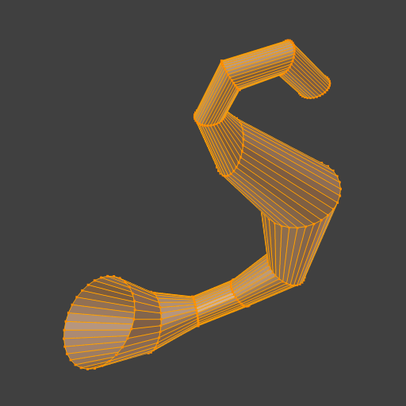
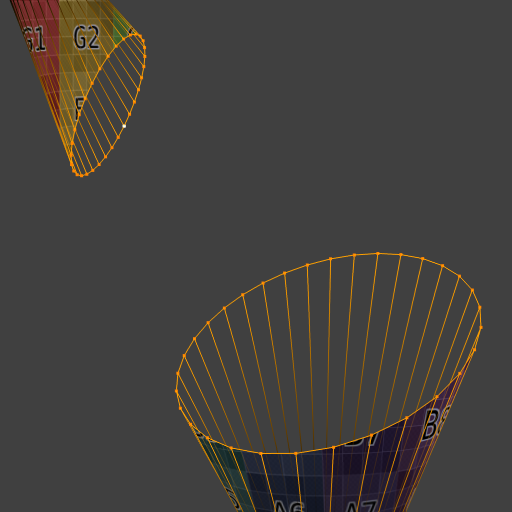

Edge Tools¶
Reference
| Mode: | Edit Mode |
|---|---|
| Menu: | |
| Hotkey: | Ctrl-E |
New Edge/Face from Vertices¶
Reference
| Mode: | Edit Mode |
|---|---|
| Menu: | |
| Hotkey: | F |
It will create an edge or some faces, depending on your selection.
See also Creating Geometry.
Set Edge Attributes¶
Edges can have several different attributes that affect how certain other tools affect the mesh.
Mark Seam and Clear Seam¶
Reference
| Mode: | Edit Mode |
|---|---|
| Menu: |
Seams are a way to create separations, “islands”, in UV maps. See the UV Mapping section for more details. These operators set or unset this flag for selected edges.
Mark Sharp and Clear Sharp¶
Reference
| Mode: | Edit Mode |
|---|---|
| Menu: |
The Sharp flag is used by the split normals and the Edge Split modifier, which are part of the smoothing/customized shading techniques. As seams, it is a property of edges, and these operators set or unset it for selected ones.
Adjust Bevel Weight¶
Reference
| Mode: | Edit Mode |
|---|---|
| Menu: |
This edge property, a value between (0.0 to 1.0), is used by the Bevel Modifier to control the bevel intensity of the edges. This operator enters an interactive mode (a bit like transform tools), where by moving the mouse (or typing a value with the keyboard) you can set the bevel weight of selected edges. If two or more edges are selected, this operator alters the average weight of the edges.
See also
Vertices also have a bevel weight which can be edited.
Edge Crease¶
Reference
| Mode: | Edit Mode |
|---|---|
| Menu: | |
| Hotkey: | Shift-E |
This edge property, a value between (0.0 to 1.0), is used by the Subdivision Surface Modifier to control the sharpness of the edges in the subdivided mesh. This operator enters an interactive mode (a bit like transform tools), where by moving the mouse (or typing a value with the keyboard) you can set the (average) crease value of selected edges. A negative value will subtract from the actual crease value, if present. To clear the crease edge property, enter a value of -1.
Edge Slide¶
Reference
| Mode: | Edit Mode |
|---|---|
| Menu: |
Slides one or more edges across adjacent faces with a few restrictions involving the selection of edges (i.e. the selection must define a valid loop, see below).
- Even E
- Forces the edge loop to match the shape of the adjacent edge loop. You can flip to the opposite vertex using F. Use Alt-Wheel to change the control edge.
- Flipped F
- When Even mode is active, this flips between the two adjacent edge loops the active edge loop will match.
- Clamp Alt or C
- Toggle clamping the slide within the edge extents.
- Factor
- Determines the amount of slide performed. Negative values correspond to slides toward one face, while positive ones, refer to the other one. It is also displayed in the 3D View footer.
- Mirror Editing
- Lets you propagate the operation to the symmetrical elements of the mesh (if present, in local X direction).
- Correct UVs
- Corrects the corresponding UV coordinates, if these exist, to avoid image distortions.
Usage¶
By default, the position of vertices on the edge loop move as a percentage of the distance between their original position and the adjacent edge loop, regardless of the edges’ lengths.

Selected edge loop. |

Repositioned edge loop. |
Even Mode¶
Even mode keeps the shape of the selected edge loop the same as one of the edge loops adjacent to it, rather than sliding a percentage along each perpendicular edge.
In Even mode, the tool shows the position along the length of the currently selected edge which is marked in yellow, from the vertex that has an enlarged red marker. Movement of the sliding edge loop is restricted to this length. As you move the mouse the length indicator in the header changes showing where along the length of the edge you are.
To change the control edge that determines the position of the edge loop, use the Alt-Wheel to scroll to a different edge.

Even Mode enabled. |

Even Mode with Flip enabled. |
Moving the mouse moves the selected edge loop towards or away from the start vertex, but the loop line will only move as far as the length of the currently selected edge, conforming to the shape of one of the bounding edge loops.
Limitations & Workarounds¶
There are restrictions on the type of edge selections that can be operated upon. Invalid selections are:
- Loop crosses itself
- This means that the tool could not find any suitable faces that were adjacent to the selected edge(s). An example that shows this is selecting two edges that share the same face. A face cannot be adjacent to itself.
- Multiple edge loops
- The selected edges are not in the same edge loop, which means they do not have a common edge. You can minimize this error by always selecting edges end-to-end or in a “chain”. If you select multiple edges just make sure they are connected. This will decrease the possibility of getting looping errors.
- Border Edges
- When a single edge was selected in a single sided object. An edge loop cannot be found because there is only one face. Remember, edge loops are loops that span two or more faces.
A general rule of thumb is that if multiple edges are selected they should be connected end-to-end such that they form a continuous chain. This is literally a general rule because you can still select edges in a chain that are invalid because some of the edges in the chain are in different edge loops.
Rotate Edge¶
Reference
| Mode: | Edit Mode |
|---|---|
| Menu: |
Rotating an edge clockwise (CW) or counter-clockwise (CCW) spins an edge between two faces around their vertices. This is very useful for restructuring a mesh’s topology.
The tool operates on selected edges or the shared edge between selected faces.

Selected edge. |

Edge, rotated CW. |
{kind=link}
Warning
To rotate an edge based on faces you must select adjacent face pairs, otherwise Blender notifies you with an error message, “Could not find any select edges that can be rotated”. Using either Rotate Edge CW or Rotate Edge CCW will produce exactly the same results as if you had selected the common edge.
Edge Split¶
Reference
| Mode: | Edit Mode |
|---|---|
| Menu: |
Edge Split is similar to the Rip tool. When two or more touching interior edges, or a border edge is selected when using Edge Split, a hole will be created, and the selected edges will be duplicated to form the border of the hole.

Selected edges. |

Adjacent face moved to reveal hole left by split. |
{kind=link}
Bridge Edge Loops¶
Reference
| Mode: | Edit Mode |
|---|---|
| Menu: |
Bridge Edge Loops connects multiple edge loops with faces.
- Connect Loops
- Open Loop
- Loops connected with open ends.
- Closed Loop
- Tries to connect to a circular loop (where start and end are merged).
- Loop pairs
- Connects each even count of loops individually.
- Merge
- Merges edge loops rather than creating a new face.
- Merge Factor
- Which edge loop the edges are merged to, a value of 0.5 will merge at a half-way point.
- Twist
- Determines which vertices in both loops are connected to each other.
- Number of Cuts
- The number of intermediate edge loops used to bridge the distance between two loops.
- Interpolation
- Linear, Blend Path, Blend Surface
- Smoothness
- Smoothness of the Blend Path and Blend Surface.
- Profile Factor
- How much intermediary new edges are shrunk/expanded.
- Profile Shape
- The shape of the new edges. See the Proportional Editing page for a description of each option.
Examples¶
Simple example showing two closed edge loops.

Input. |

Bridge result. |
Example of the Bridge tool between edge loops with different numbers of vertices.

Input. |
{kind=link}
{kind=link}
Example using the Bridge tool to cut holes in face selections and connect them.

Input. |

Bridge result. |
Example showing how Bridge tool can detect multiple loops and connect them in one step.

Input. |

Bridge result. |
{kind=link}
{kind=link}
Example of the subdivision option and surface blending with UV’s.

Input. |

Bridge result. |
{kind=link}